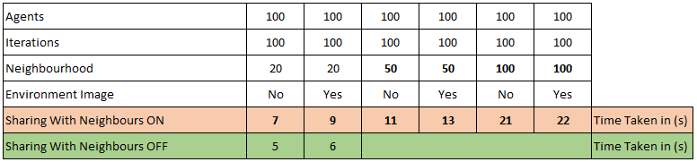
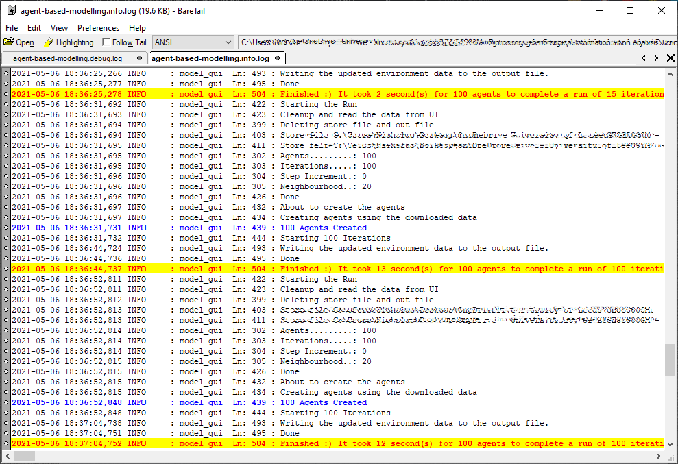

Testing & Debugging
The program is split into a lot of functions. I was able to test functions independently most of the time. Although I did not write Test Cases, I did use ad-hoc testing, with sample data and expected results for functions that supported such testing. Of course, my development was not Test Driven, in that I did not design the tests prior to programming.
The widening of the neighbourhood scope, adversly affects performance as can be seen in the below timing table. This makes sense, since the larger the "neighbourhood", the more resource manipulation there will be.

A change I had planned to do, was to move the sharing and distance calculation functionality from the framework, and use the itertools library and possibly hash tables, to make the functionality more efficient. It would still have to be executed after every iteration, however it would result more efficient.
The itertools features the following as an example: itertools.combinations(agents_list, 2)
Logging also plays a part in testing and debugging. I created a basic logging function, which uses the Python logging library. This makes it easy to generate a lot of debug information without the downside of hogging the console through the print function. The logging object is acquired at the start of the main script and used throughout, using:
logger.info(message) (or self.logger.info within instances)
logger.debug(message) (or self.logger.debug within instances)
logger.critical(message) (or self.logger.critical within instances)
The info level produces enough logging to know what is happening without getting spammed by messages. This is the level displayed in the console.
The debug level then produces copious logging, which can be accessed in a different log file, for convenience. Using a free tool like baretail (for windows), one can filter for certain words with colour coding.

Although I am quite happy with the application, there are several points that need to be addressed to make this application better.
TODO
1. Include threading so that the UI does not block
2. Possibly make it web based, using something like the Flask framework.
3. Research on improvement methods for both the matplotlib related functions, and possibility of using multithreaded/multiprocessing.